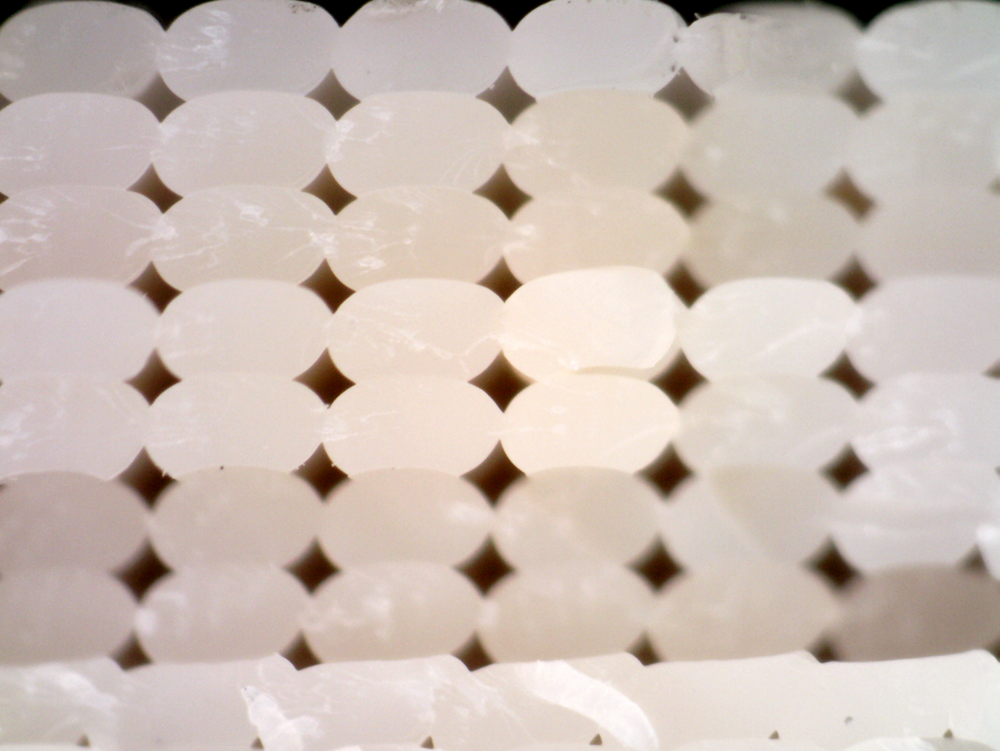
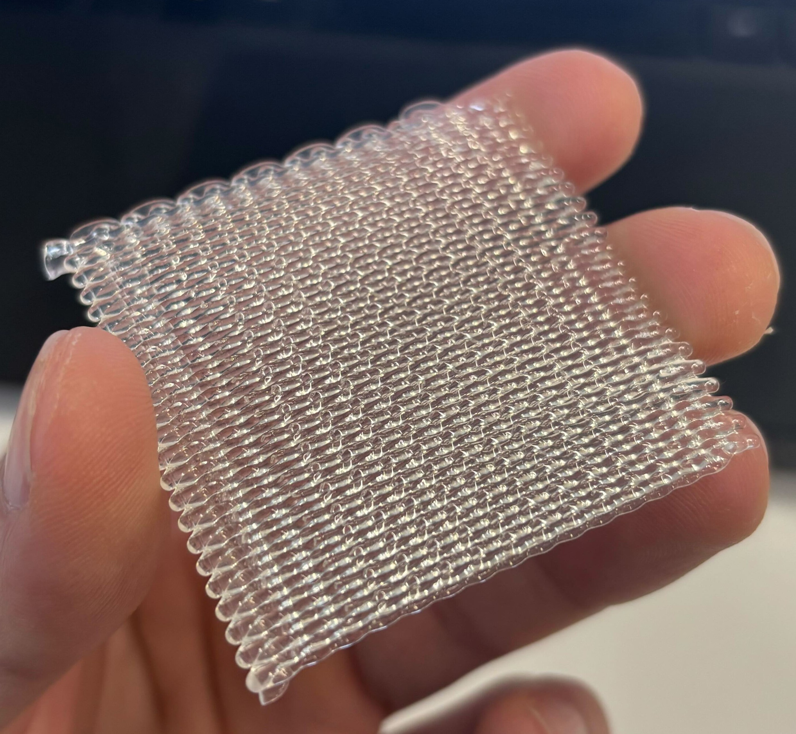

One of the biggest limitations in FDM 3D printing is anisotropy—parts are significantly weaker in the Z-direction than in the X–Y plane.
In many cases, Z-strength is only ~60% of in-plane strength. This happens because of the layer-by-layer process in fused filament fabrication (FFF) 3D printing, where each layer cools before the next is deposited, leading to relatively weak interlayer bonding.
The Problem with Planar Layers
Even within a single layer, voids can form between extrusion lines, especially when material viscosity is high or extrusion parameters are suboptimal.
These voids act as stress concentrators, making it easier for cracks to initiate and propagate. As a result, most printed parts fail along relatively flat, planar paths.

Non-Planar Printing as an Opportunity
If that's a new term for you, non-planar 3D printing refers to the simultaneous control of all 3 cartesian axis (X, Y, and Z) during printing, as opposed to the traditional layer-by-layer process. Methods on non-planar slicing are plenty, as covered by popular hobbiest like CNC Kitchen in this video. There are a few notable reasons why non-planar slicing is interesting, like the ability to eliminate support material on close to 90 degree overhangs or the development of intricate patterns through open-air extrusion like in this video.
I'm interested in the latter use-case because it addresses the problem that I initially presented: eliminating a single fracture plane and redirecting crack propagation across layers. Since non-planar printing allows the printed plastic to align across several layers rather than a single layer, we reduce the opportunity for the part to fracture catastrophically through a single plane. Think of splitting firewood with the grain. With relatively little force, cracks are able to split the material that was already weakly connected in that direction, because you're exploiting a pre-existing plane of weakness. Now imagine splitting the same piece of wood perpendicular the grain. The crack has to tear through the tough fibers rather than the weaker bonds between the fibers. Cracks need to nucleate, reorient and find new low resistance pathways to break the material. 3D printed parts manufactured with current slicing techniques are susceptible to the former failure mode - cracks can easily propagate though layers since the Z direction is often the weakest.
This is the problem I'm interested in solving. But it would be dishonest to say that I was the first one to think of a solution to this problem. A number of individuals and companies have implemented solutions that use traditional planar slicing like brick layers which use "half-layers" to offset adjacent tracks, analogous to brick-laying in construction. While this solution is still fairly trivial in concept and implementation, it requires beads to align in a single direction, which results in anisotropy in the X-Y plane (stronger in one direction compared to the other). This is where my solution comes in: woven infill.
Woven Infill


Instead of depositing flat, parallel lines, woven infill introduces controlled Z-variation into the toolpath, creating an interlocking structure across layers.
- Z-offsets are approximately half a layer height
- Spacing between paths is ~2× extrusion width
Why Add Gaps?
At first glance, this approach seems counterintuitive: why introduce gaps when infill is supposed to eliminate them?
The key idea is intentional underfilling followed by compression. Adjacent paths overlap in 3D space, forcing material into void regions and increasing interlocking between layers.
Hypothesis
- Disrupts planar crack propagation
- Increases interlayer bonding area
- Reduces effective void size
This is an early-stage concept, but it opens up interesting directions for experimentation and optimization.